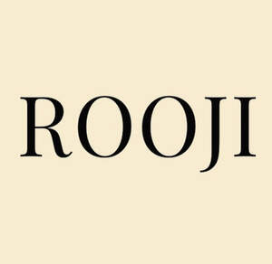

Trade Mark Journal No.2025/044 31 October 2025
UK00004258596 3 September 2025 (14,25,35)
Mark 1
ROOJI
Mark 2

- Class 14
- Jewellery; Necklaces [jewellery]; Brooches [jewellery]; Jewellery brooches; Jewellery, including imitation jewellery and plastic jewellery; Pendants [jewellery]; Bracelets [jewellery]; Brooches [jewellery, jewelry (Am.)]; Ornaments [jewellery]; Amulets being jewellery; Amulets [jewellery]; Pearls [jewellery]; Trinkets [jewellery]; Jewelry; Necklaces [jewellery, jewelry (Am.)]; Fashion jewellery; Lockets [jewellery]; Gold jewellery; Brooches [jewelry]; Jewelry brooches; Brooches being jewelry; Jade [jewellery]; Clasps for jewellery; Charms [jewellery]; Charms for jewellery; Jewellery charms; Enamelled jewellery; Items of jewellery; Jewellery items; Pearls [jewellery, jewelry (Am.)]; Costume jewellery; Ornaments [jewellery, jewelry (Am.)]; Decorative brooches [jewellery]; Trinkets [jewellery, jewelry (Am.)]; Rings being jewellery; Rings [jewellery]; Amulets [jewellery, jewelry (Am.)]; Bracelets [jewellery, jewelry (Am.)]; Pewter jewellery; Jewellery stones; Cloisonné jewellery [jewelry (Am.)]; Cloisonné jewellery; Wristlets [jewellery]; Cloisonne jewellery; Charms [jewellery, jewelry (Am.)]; Lockets [jewellery, jewelry (Am.)]; Chains [jewellery, jewelry (Am.)]; Jewellery products; Rings [jewellery, jewelry (Am.)]; Ivory [jewellery, jewelry (Am.)]; Shoe jewellery; Precious jewellery; Crucifixes as jewellery; Necklaces [jewelry]; Agate as jewellery; Pins [jewellery, jewelry (Am.)]; Jewellery chains; Chains [jewellery]; Jewellery in semi-precious metals; Jewellery chain; Ivory jewellery; Medallions [jewellery, jewelry (Am.)]; Jewellery caskets; Gold plated brooches [jewellery]; Paste jewellery [costume jewelry (Am.)]; Paste jewellery [costume jewelry [Am.]]; Pins [jewellery]; Pins being jewellery; Jewellery boxes; Amber pendants being jewellery; Jewellery for personal adornment; Pendants [jewelry]; Imitation jewellery; Cabochons for making jewellery; Jewellery chain of precious metal for necklaces; Amberoid pendants being jewellery; Body jewellery; Beads for making jewellery; Gold thread [jewellery, jewelry (Am.)]; Jewelry (Paste -) [costume jewelry]; Paste jewelry [costume jewelry]; Jewellery incorporating diamonds; Personal jewellery; Jewellery for pets; Silver thread [jewellery, jewelry (Am.)]; Fake jewellery; Jewellery in non-precious metals; Plastic costume jewellery; Imitation jewellery ornaments; Hat jewellery; Clips of silver [jewellery]; Facial jewellery; Jewellery findings; Jewellery in the form of beads; Crosses [jewellery]; Sterling silver jewellery; Bracelets [jewelry]; Paste jewellery; Jewellery (Paste -); Jewellery incorporating pearls; Amulets [jewelry]; Jewellery articles; Articles of jewellery; Jewellery made from gold; Pearls [jewelry]; Jewellery made from silver; Diamond jewelry; Wire of precious metal [jewellery, jewelry (Am.)]; Jewellery chain of precious metal for anklets; Jewellery containing gold; Dress ornaments in the nature of jewellery; Lockets [jewelry]; Clasps for jewelry; Jewellery in precious metals; Jewellery of precious metals; Jewelry stickpins; Jewellery chain of precious metal for bracelets; Threads of precious metal [jewellery, jewelry (Am.)]; Trinkets [jewelry]; Artificial jewellery; Jewellery for personal wear; Decorative pins [jewellery]; Jewellery fashioned from non-precious metals; Jewellery cases; Charms [jewelry]; Jewelry charms; Charms for jewelry; Body costume jewellery; Jewellery rope chain for necklaces; Jewellery fashioned of semi-precious stones; Jewelry hatpins.
- Class 25
- Clothing; Knitwear [clothing]; Jackets [clothing]; Ready-to-wear clothing; Woolen clothing; Furs [clothing]; Garments for protecting clothing; Layettes [clothing]; Clothing layettes; Headbands [clothing]; Headbands for clothing; Gloves [clothing]; Gloves as clothing; Clothes; Aprons [clothing]; Maternity clothing; Kerchiefs [clothing]; Jerseys [clothing]; Denims [clothing]; Shorts [clothing]; Cashmere clothing; Capes (clothing); Gabardines [clothing]; Oilskins [clothing]; Leather clothing; Clothing of leather; Leather (Clothing of -); Collars [clothing]; Silk clothing; Parts of clothing, footwear and headgear; Knitted clothing; Veils [clothing]; Hoods [clothing]; Corsets [clothing, foundation garments]; Windproof clothing; Wristbands [clothing]; Embroidered clothing; Belts [clothing]; Belts for clothing; Bandeaux [clothing]; Waterproof clothing; Rainproof clothing; Casual clothing; Visors [clothing]; Jackets being sports clothing; Stuff jackets [clothing]; Jackets (Stuff -) [clothing]; Clothing for leisure wear; Bottoms [clothing]; Playsuits [clothing]; Ready-made clothing; Latex clothing; Trunks being clothing; Infant clothing; Woven clothing; Drawers [clothing]; Drawers as clothing; Leisure clothing; Clothing for children; Athletic clothing; Ties [clothing]; Clothing for sports; Sports clothing; Muffs [clothing]; Bodies [clothing]; Clothing for babies; Tops [clothing]; Clothing for infants; Clothing for cycling; Weatherproof clothing; Pockets for clothing; Water-resistant clothing; Triathlon clothing; Handwarmers [clothing]; Clothing for skiing; Fabric belts [clothing]; Thermal clothing; Beach clothing; Chaps (clothing); Cowls [clothing]; Men's clothing; Fishing clothing; Dance clothing; Mitts [clothing]; Plush clothing.
- Class 35
- Advertising the goods and services of online vendors via a searchable online guide; Online marketing; Online advertising; Online advertisements; Providing a searchable online advertising guide featuring the goods and services of online vendors; Provision of an online marketplace for buyers and sellers of goods and services; Providing a searchable online advertising guide featuring the goods and services of other on-line vendors on the internet; Online advertising services; Online retail services in relation to downloadable virtual handbags; Providing online marketplaces for sellers of goods and or services; Online ordering services; Online retail services for downloadable virtual clothing; Provision of an on-line marketplace for buyers and sellers of goods and services; Online retail services for downloadable digital music; Online retail store services relating to clothing; Online retail services relating to handbags; Online retail services in relation to downloadable virtual clothing; Arranging commercial transactions, for others, via online shops; Online retail store services in relation to clothing; Online retail services relating to jewelry; Provision of an online marketplace for buyers and sellers of downloadable digital image files authenticated by non-fungible tokens [NFTs]; On-line advertising; Online retail services in relation to downloadable virtual headwear; On-line trading services in which seller posts products to be auctioned and bidding is done via the Internet; Online retail services in relation to downloadable virtual works of art; Online retail services relating to toys; Online retail services in relation to downloadable virtual footwear; On-line auction bidding for others; Trade marketing [other than selling]; Online retail services for downloadable ring tones; Online retail services for downloadable and pre-recorded music and movies; Providing searchable online advertising guides; Providing on-line auction services; Online retail services relating to clothing; Online retail services relating to cosmetics; Online business networking services; Online advertising on computer networks; On-line auctioneering services via the Internet; Promotion, advertising and marketing of on-line websites; Online advertising on a computer network; Provision of online marketplaces for buyers and sellers of goods and services which are authenticated by non-fungible tokens; Telephone marketing services [not selling]; Online retail store services relating to cosmetic and beauty products; Conducting virtual trade show exhibitions online; On-line advertising and marketing services; Compilation of online business directories; Business information services provided online from a computer database or the internet; Online retail services relating to luggage; On-line auctioneering; Promoting the artwork of others by means of providing online portfolios via a website; Mediation of contracts for purchase and sale of products; Promoting the music of others by means of providing online portfolios via a website; Advertising services to promote the sale of beverages; Arranging subscriptions of the online publications of others; Dissemination of advertising matter online; Online advertising network matching services for connecting advertisers to websites; Promoting the designs of others by means of providing online portfolios via a website; Sales promotions at point of purchase or sale, for others; Providing an on-line commercial information directory on the internet; Retail of third-party pre-paid cards for the purchase of multimedia content; Providing online commercial directory information services; On-line promotion of computer networks and websites; Rental of advertising space on-line; Procuring of contracts for the purchase and sale of goods; Promoting the sale of goods and services of others through the distribution of printed material and promotional contests; Provision of commercial information from online databases; Business information services provided online from a global computer network or the internet; Arranging of contracts for the purchase and sale of goods and services, for others; Arranging business introductions relating to the buying and selling of products; Preparation of mailing lists for direct mail advertising services [other than selling]; Promoting the goods and services of others through advertisements on Internet websites; Promoting the sale of fashion goods through promotional articles in magazines.
ROOJI Limited